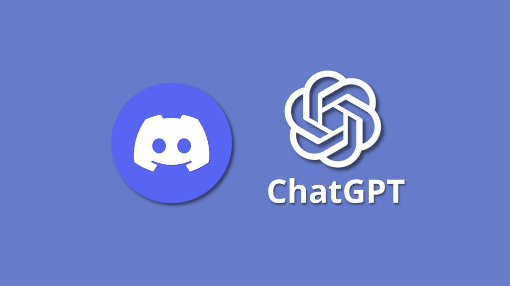
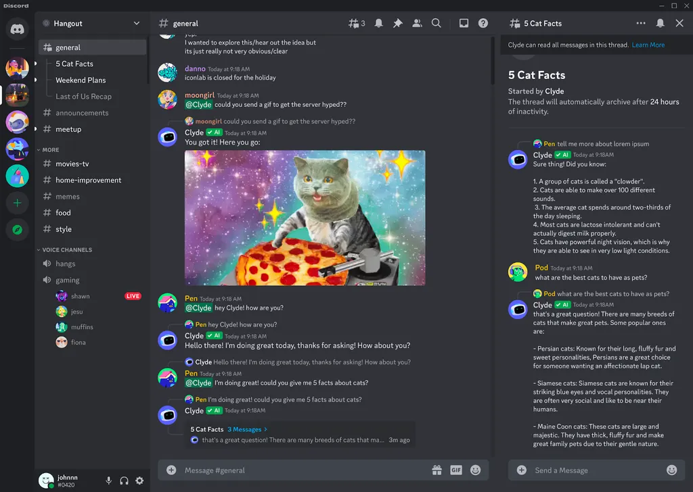
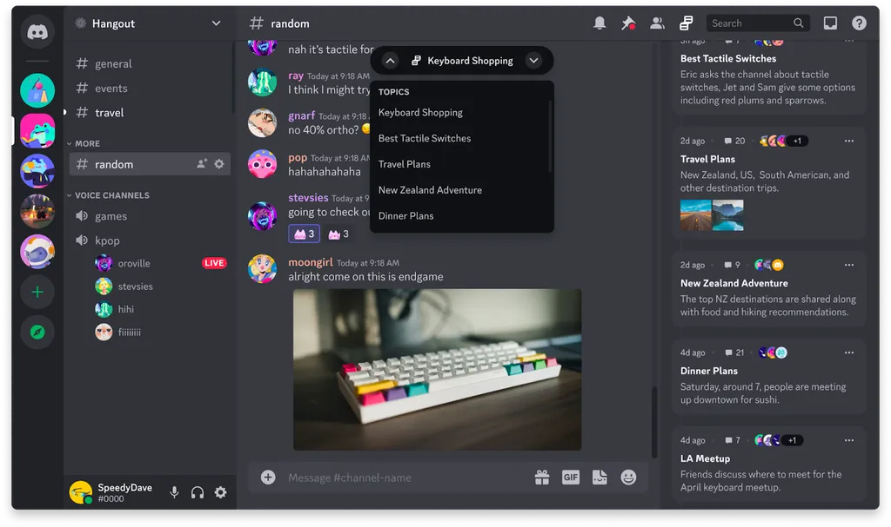
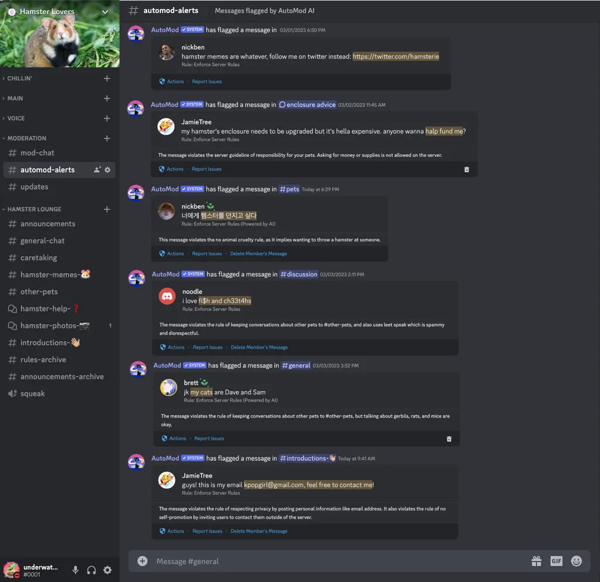
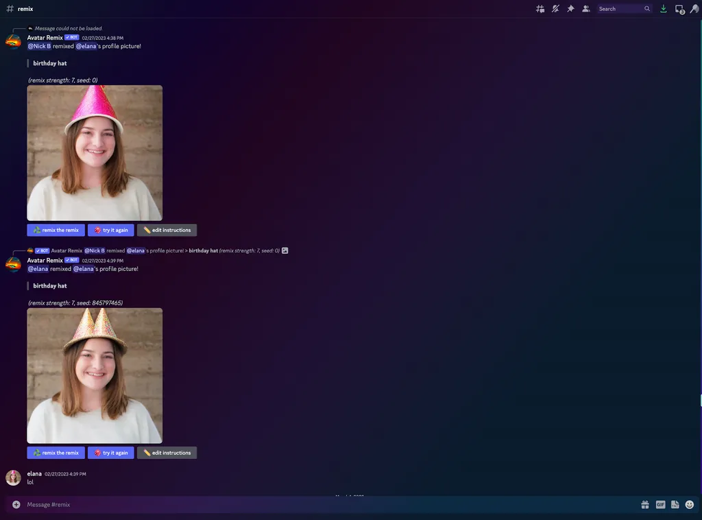

O Discord é o mais novo aplicativo a trazer soluções de inteligência artificial para o usuário. O software de comunicação pretende oferecer um conjunto de melhorias focadas no usuário, em moderação e para expandir o uso de IA de maneira utilitária.
• ChatGPT: entenda como funciona a inteligência artificial do momento - e os riscos que ela traz
Para interagir, é só digitar o comando @Clyde em um servidor e iniciar o bate-papo nos canais suportados. O bot pode recomendar listas de reprodução, exibir GIFs e até usar emojis nas respostas como uma pessoa faria.

A experiência de IA será disponibilizada inicialmente para um pequeno grupo de servidores a partir da próxima semana. Você poderá papear, sem limitação, com o Clyde, fazer brincadeiras ou até pedir para criar conteúdos.

A tecnologia também deve produzir resumos de conversas de forma automática. O recurso agrupará fluxos de mensagens em tópicos para facilitar o acompanhamento ou a participação em assuntos de seu interesse.
Quando isso for liberado na sua conta, você verá um painel no lado direito da tela com os assuntos separados. Somente servidores autorizados pelos admins terão suporte aos resumos de IA, então isso não deve depender do usuário

As ferramentas de moderação AutoMod também devem aproveitar o poder de processamento do modelo de linguagem inteligente. O robô também deve intervir quando o admin digitar um comando errado ou para realizar tarefas no seu lugar — aquelas feitas com o uso da barra (/).
A máquina também será capaz de encontrar e alertar os moderadores quando uma regra do servidor for quebrada. Isso deve ocorrer a partir da compreensão do contexto de conversas e, obviamente, do aprendizado das normas.
O AutoMod AI começa a ser liberado ainda hoje para um número limitado de servidores, e os contemplados devem receber um convite para experimentar a ferramenta e dar feedback para o Discord.

Além das já mencionadas experiências, o Discord também pretende inserir uma ferramenta de criação de avatares a partir de IAs generativas de imagem. Chamada Avatar Remix, a tecnologia deve funcionar de modo semelhante ao DALL-E e Midjourney para que as pessoas possam criar suas próprias representações virtuais a partir de texto.
Para quem não quer brincar sozinho com a IA, o app vai oferecer uma espécie de espaço virtual compartilhado para colaboração. Assim, você poderá criar imagens em conjunto com duas ou mais pessoas. Será possível também usar ferramentas de desenho à mão livre ou baseada na tela do usuário para apresentações.
Por fim, a companhia pretende lançar uma espécie de incubadora de projetos para quem quiser dar propósitos criativos para a IA do Discord. A ideia é investir até US$ 5 milhões (cerca de R$ 25 milhões, na cotação atual) para financiar desenvolvedores independentes e startups que desenvolveram soluções para a plataforma.
Quem for selecionado para o programa vai receber dinheiro, treinamento com desenvolvedores do Discord e acesso antecipado a recursos exclusivos. Ainda não está claro como será feita a seleção nem quando se iniciará, mas os interessados já podem se candidatar no site do programa.
Além do Discord, o Snapchat também já implementou uma IA de conversa para seus usuários. O Slack foi outra ferramenta interessada em dar um toque de produtividade de IA para suas soluções corporativas. Essas duas foram soluções baseadas na tecnologia GPT, da OpenAI, que começou a ser comercializada recentemente para empresas.